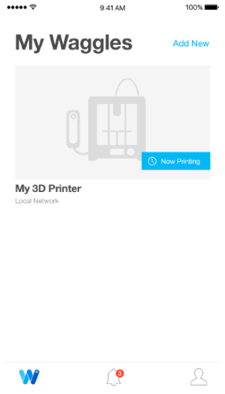
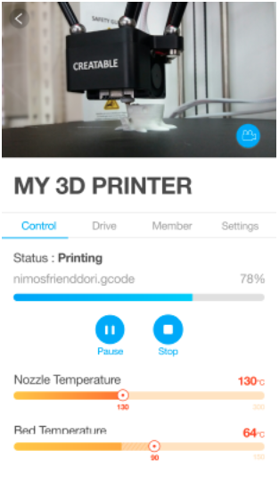

Waggle Quick Strat Manual
What is Waggle?
Introducing the Waggle, the simplest remote controller for 3D printers. Breathe new life into your old 3D printers by monitoring, controlling, and sharing control of them with whomever you choose with only a few swipes on your smartphone. Waggle is a both a hardware device that plugs into your 3D printer, and a software platform that lives in the cloud to make you more efficient, and to free your creativity.
The Waggle comes with following parts:
- Waggle device
- Waggle Stand
- Power adapter & Micro USB cable
- USB 2.0 A to B cable for 3D printer
App
-
iOS App: Find the Waggle Application in the Apple AppStore with the keyword “waggle”
-
Android App: Not available at this moment and will update soon.
Hook up the Waggle to 3D Printer
Plug the microUSB cable and USB A to B cable in bottom sockets.
Set the waggle stand with sliding on the back side. Plug the microUSB cable in power adapter.
Setup with an App
Power up the Waggle, give about 40 seconds to boot, Waggle access point hostname WGL_xxxxxx should show up on your PC or Mobile’s wifi list and you could setup the Waggle and with app as following.
Create an account: Tap the “Create and account” and Enter your email address and password to register your account.
Check your email and click the confirmation link

Sign In with your Account
If it is the first time to connect the Waggle, you should add the new waggle. Tap the Add New Waggle button and follow the instruction of the app.

After adding the new waggle, you can see your waggle from the list of the waggles

Click the Drive tab to upload a file from Google Drive.
When the upload is finished, you can see the files on the Drive tab.
When you select an STL file, you can view the information in this file, change its size, and rotate it in the X, Y, and Z axes. Set the slicer options to print and press the “Slice & Print” button to start printing.
If you select gcode file, it will start printing without slicing.

When printing starts, you can check the file name and printer temperature & progress.